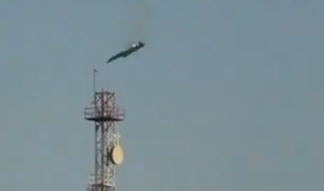

Meu Blog de Notícias
As ultimas noticias do mundo
Kuwait diz que aviões militares dos EUA caíram; tripulação sobreviveu
Publicado em 2 de Março de 2026

O Ministério da Defesa do Kuwait afirmou que “várias aeronaves militares dos Estados Unidos caíram” nesta segunda-feira (2) e que “todos os tripulantes sobreviveram”.“As autoridades competentes iniciaram imediatamente operações de busca e resgate”, disse o porta-voz do Ministério da Defesa do Kuwait, coronel Said Al-Atwan, no comunicado.
“As tripulações foram retiradas dos locais dos acidentes e transferidas para um hospital para avaliação de seu estado de saúde e para receber os cuidados médicos necessários”, afirmou, acrescentando que estão em condição “estável”.
Detalhes
| Categoria |
Autor |
| Atualidade |
CNN Brasil |